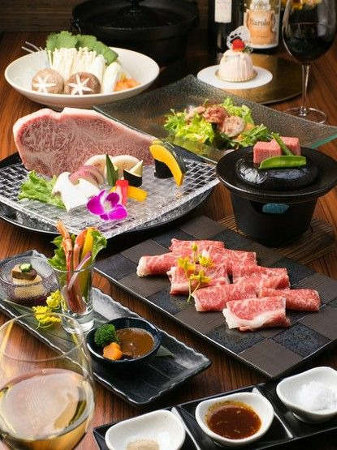
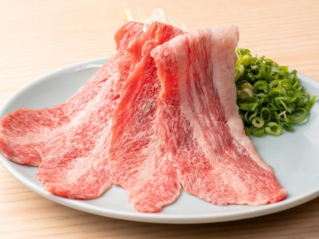

✈️ 桃園機場起飛
由桃園國際機場出發，搭乘班機前往廣島。
2027/2/2－2/6 5大1小
📅 最後更新：2026/09/17 17:13
🗺️ 行程地圖待更新
由桃園國際機場出發，搭乘班機前往廣島。
完成入境手續並領取行李。
使用廣島機場的行李配送服務，將行李直接寄送至入住飯店。
預計搭乘 12:35 從廣島機場出發的巴士，約 13:33 抵達吳市車站。
購票地點：
前往日本國內線到達大廳購買巴士票。從國際線到達大廳出來後往右走，
再進入國內線航廈；入口處設有便利商店，巴士售票處就在旁邊。
搭車月台：
請至 1 號月台，搭乘前往「廣島巴士總站／吳」的巴士。
巴士經中筋站，可前往市中心紙屋町商圈或吳車站。
售票方式：
使用現金、需要收據，或 IC 卡餘額不足的旅客，
請至左側黃色區域的售票機購買實體車票。售票機支援信用卡付款。
票價：
成人：1,500 日圓
兒童：750 日圓
從吳市車站步行約 6 分鐘抵達餐廳。
呉ハイカラ食堂位於廣島縣吳市，是一家提供海上自衛隊相關料理的餐廳， 尤其以獲得潛艦「蒼龍」號艦長認證的「海上自衛隊咖哩」聞名。
海軍咖哩 潛艦蒼龍認證 📍 開啟地圖參觀海上自衛隊吳史料館，又稱「鐵鯨館」，入館免費。
入館前可以看到曾經真實服役的巨大潛水艇 「秋潮號」（あきしお）。 這是全日本唯一在陸地上展示的真實潛水艇，也是熱門拍照景點。
秋潮號於 1985 年下水，2004 年退役後移置至史料館外展示。 館內可進一步了解潛水艇生活、掃雷任務及吳市的海軍歷史。
從海上自衛隊吳史料館步行前往煉瓦通商店街，步行時間約 20 分鐘。
📍 開啟地圖前往吳市最熱鬧的商店街，逛逛當地商店、餐廳及特色小店。
可以前往老字號店家「福住」，購買當地著名的 炸蛋糕作為點心。
🔗 查看相關資訊先整理幾間評分較高的餐廳，大家可以事先票選，將票數最高的餐廳列為第一選擇；也可以依當天想吃的餐點、候位情況及營業時間再做決定。
從 JR 吳站（呉駅）搭乘 JR 吳線，
前往 JR 廣島站（広島駅）。
實際乘車班次將於出發前一個月查詢確認。
APA HOTEL HIROSHIMA EKIMAE SHINKANSENGUCHI
抵達廣島站後前往飯店，領取已送達的行李並辦理入住。
📍 開啟地圖在飯店集合後，步行前往 JR 廣島站，準備購買早餐及搭乘新幹線。
購買八天堂奶油餐包作為早餐。店鋪位於 JR 廣島站新幹線驗票口內，通過驗票口後可在電扶梯旁找到。
📍 開啟地圖從 JR 廣島站搭乘新幹線前往新尾道站，車程約 33 分鐘。
預計於 09:20 前抵達新尾道站，出站後可先使用洗手間， 再前往巴士 1 號乘車處。
從新尾道站 1 號乘車處，搭乘 09:40 發車、經長江的巴士， 預計 09:50 抵達長江口，車程約 10 分鐘。
在長江口下車後，步行約 2 分鐘即可抵達千光寺山纜車山麓站。
建議購買單程票搭乘纜車上山，遊覽千光寺後， 再沿著貓之細道步行下山。
成人（12 歲以上）
單程票：500 日圓
來回票：700 日圓
6歲以下兒童不用錢
🔗 查看纜車門票資訊
搭乘纜車上山後，預計停留約 1.5 小時，參觀千光寺及周邊景點。
👀千光寺必看景點
本堂（赤堂） 千光寺最具代表性的朱紅色殿堂，可眺望尾道市區與瀨戶內海。
玉之岩
與尾道傳說相關的巨大岩石，周邊還能看到敲擊時會發出聲響的鼓岩。
文學之路
山中散策路沿途設有 25 座文學碑，可以一邊散步，一邊感受尾道的文學氛圍。
千光寺公園展望台 PEAK
可從展望台欣賞尾道市區、島嶼及瀨戶內海的 360 度景色。
從千光寺一帶沿著貓之細道步行下山，途中可以欣賞尾道的坡道、石階、老屋及具有特色的福石貓。
貓之細道全長約 200 公尺，沿途散布著彩繪福石貓、藝廊、咖啡店及由老屋改造而成的小店，可以放慢腳步探索巷弄。
途中可留意招財貓美術館，館內展示不同造型的招財貓作品，也是貓之細道一帶的特色景點。
預計於 12:00 左右抵達山下，接著前往尾道商店街。
🔗 查看景點介紹1 🔗 查看景點介紹2 🔗 查看景點介紹3
先整理幾間評分較高的餐廳，大家可以事先票選，將票數最高的餐廳列為第一選擇；
也可以依當天想吃的餐點、候位情況及營業時間再做決定。
位於尾道皇家飯店二樓，靠窗座位可以欣賞尾道美麗海景。
餐點選擇包含米飯、麵食及尾道拉麵，部分餐點會提供新鮮山葵， 可以自行現磨。店內另有免費自助咖啡機及飲料。
景觀餐廳 尾道拉麵 現磨山葵 📍 開啟地圖
以拉麵為主的餐廳，可以作為想吃日式拉麵時的選擇。
午餐後步行前往渡船碼頭，再搭船前往向島。 碼頭附近沒有非常明顯的「尾道渡船」標示，建議沿著海岸步行尋找。
尾道渡船約每 10 分鐘一班，上下學尖峰時段約每 5 分鐘一班。 航程約 5 分鐘。
營業時間：06:00–22:00
成人票價：單程 100 日圓
兒童票價：單程 50 日圓
抵達向島後，前往創立於 1930 年的汽水工廠 「後藤鉱泉所」，品嚐充滿懷舊風味的彈珠汽水。
從渡船碼頭步行即可抵達。向島商店街不長，遊客也不多， 沿途可以看到雜貨店、美容院及乾貨店等充滿在地生活感的小店， 氛圍如同安靜的鄉間街道。
📍 開啟彈珠汽水工廠地圖 📍 開啟公園觀景台地圖 🔗 查看向島旅遊介紹從向島碼頭搭乘渡船返回尾道，航程約 5 分鐘。 抵達後前往尾道商店街。
成人票價：單程 100 日圓
兒童票價：單程 50 日圓
沿著尾道本通商店街散步，逛逛老店、甜點店及當地特色商店， 最後一路步行前往 JR 尾道站。
麵包屋航路（パン屋航路）
尾道相當知名的麵包店，可以購買麵包及貝果。
御菓子司 松愛堂
創業近百年的和菓子老店，可以購買銅鑼燒及日式點心。
從 JR 尾道站搭乘 JR 返回廣島，預計車程約 1 小時 10 分鐘。
返回廣島後，先在廣島站周邊享用晚餐，再依時間與體力安排逛街及購買伴手禮。
可以事先票選第一選擇，也可以依當天想吃的餐點、候位情況及營業時間再做決定。
晚餐前後可依時間選擇以下百貨及商場逛街。
minamoa
與廣島站相連的新商場，設有餐廳、服飾、生活用品及特色商店。
ekie
位於廣島站內，適合購買廣島伴手禮、甜點及當地特色商品。
福屋廣島站前店
位於廣島站南口一帶的百貨公司，可依營業時間安排前往。
在飯店集合後，步行前往早餐餐廳。
客美多咖啡 VIA INN 廣島新幹線口店
Komeda's Coffee Via Inn Hiroshima Shinkansenguchi
享用早餐及咖啡後，前往 JR 廣島站準備搭車。
📍 開啟地圖從 JR 廣島站搭乘山陽本線前往宮島口站。
抵達宮島口站後，可先使用洗手間，再步行前往宮島口渡輪碼頭， 購票並搭乘渡輪前往宮島，航程約 10 分鐘。
宮島松大汽船
往返宮島口與宮島的渡輪，可依現場船班時間搭乘。
JR 西日本宮島渡輪
部分白天船班會行駛較靠近海上大鳥居的航線，適合在船上欣賞及拍攝大鳥居。
成人票價：單程 200 日圓
兒童票價：單程 100 日圓
航程：約 10 分鐘
前往嚴島神社參拜，欣賞建於海上的神社建築， 並與代表宮島的海上大鳥居拍照。
參觀後可在神社周邊散步，欣賞海岸景色及宮島街道。 大鳥居周邊景觀會受到當日潮汐時間影響。
🔗 查看宮島景點介紹 1 🔗 查看宮島景點介紹 2在宮島商店街周邊享用午餐，之後逛街、品嚐小吃並購買伴手禮。 午餐餐廳可依當天候位情況及想吃的餐點決定。
宮島特色竹輪
可以在商店街購買現烤竹輪，邊走邊吃。
紅葉堂
購買宮島特色的炸紅葉饅頭。熱門時段可能需要排隊，
如果排隊人潮太多，也可以前往對面的博多屋。
宮島飯匙
宮島飯匙被視為能夠帶來好運的吉祥物，也是當地具有代表性的伴手禮。
Miyajima Coffee
可以購買咖啡或冰淇淋，作為逛街途中的休息點。
從宮島碼頭搭乘渡輪返回宮島口，航程約 10 分鐘。
從宮島口搭乘大眾交通工具前往廣島城，預計車程約 45 分鐘。
遊覽廣島城及周邊公園，了解廣島城的歷史， 並欣賞護城河、城郭與庭園景色。
結束廣島城行程後前往享用晚餐，餐廳及後續安排待更新。
在飯店集合後，搭車前往早餐餐廳。
從廣島站一帶出發，前往當天選定的早餐餐廳。
可以事先票選第一選擇，也可以依當天想吃的餐點、距離及候位情況再做決定。
早餐後步行前往廣島和平紀念資料館，預計步行約 10 分鐘。
📍 開啟地圖透過館內保存的歷史資料、照片及遺物，了解廣島原爆造成的影響， 以及戰後重建與和平倡議的歷史。
成人：200 日圓
國中生及以下：免費
65 歲以上：100 日圓，需出示護照等年齡證明
館內保存著廣島原爆著名的「人影之石」。原爆發生時， 一名坐在距離爆心地約 260 公尺處、住友銀行廣島支店石階上的人， 遮擋了部分熱輻射。
人影並非人體氣化後印在石階上，而是周圍石材受到強烈熱輻射影響而褪色， 被人體遮擋的部分因受到的輻射較少，因而留下顏色較深的人形輪廓。
從廣島和平紀念資料館步行前往舊日本銀行廣島支店。
📍 開啟地圖舊日本銀行廣島支店距離原爆爆心地約 380 公尺， 建於 1936 年，外觀以花崗岩及人造石打造，呈現古典建築風格。
建築因結構堅固而在原爆中倖存，爆炸後僅兩天便恢復部分營業， 並持續使用至 1992 年。目前已被指定為廣島市重要文化財。
館內可以欣賞厚重的銀行櫃檯、地下室金庫大門及相關展覽。
步行前往廣島 PARCO 及周邊商店街，準備享用午餐及逛街。
📍 開啟地圖從舊日本銀行廣島支店步行前往 Kunimatsu Honten（くにまつ 本店）， 步行時間約 10 分鐘。
📍 開啟地圖
くにまつ 本店
品嚐廣島特色的無湯擔擔麵。
網友建議吃完麵後，將白飯加入剩餘的醬汁中拌勻， 剛好可以完整享用剩下的醬汁。
無湯擔擔麵 現金支付午餐後若還有時間，可以前往附近的商店街散步及逛街。
📍 開啟餐廳地圖參觀原爆圓頂館外觀並拍照，了解這座被保留下來的原爆遺址及其歷史意義。
前往廣島紙鶴塔，從頂樓展望台欣賞廣島市區、 原爆圓頂館及周邊景色。
12 樓設有紙鶴廣場，可以親手摺紙鶴，再將紙鶴投入「紙鶴牆」。
下樓時可以沿著螺旋步道欣賞各樓層的壁畫， 也可以使用溜滑梯前往較低樓層。若要使用溜滑梯， 需先在 12 樓閱讀並簽署同意書。


返回飯店休息，整理行李並準備隔日返程。
辦理退房並確認行李及隨身物品，準備前往廣島機場。
從廣島市區出發前往廣島機場，實際搭乘方式及班次待確認。
抵達機場後，辦理航空公司報到、行李托運、安檢及出境手續。
如有免稅商品或需要接受海關確認的物品，請預留足夠時間完成相關程序。
建議抵達機場並完成報到手續後，再依剩餘時間選擇餐廳享用早餐。
搭乘返程班機，由廣島返回台灣。
抵達桃園國際機場，結束五天廣島之旅。